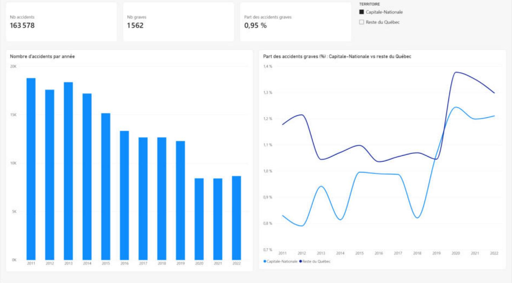

Accidents de la route dans la Capitale-Nationale (2011-2022)
Analyse de 1,7 million de rapports d'accident de la SAAQ pour comprendre quand, dans quelles conditions et pour qui les accidents sont les plus graves dans la région, comparée au reste du Québec.
0,95 %d'accidents graves dans la région, contre 1,14 % ailleurs au Québec
× 21un accident avec piéton est 21 fois plus souvent grave
22 %des accidents graves impliquent un piéton, pour 1,3 % des accidents
Constat inattendu : les accidents sur chaussée enneigée ou glacée sont moins souvent graves que sur chaussée sèche, sans doute parce que les conducteurs ralentissent.